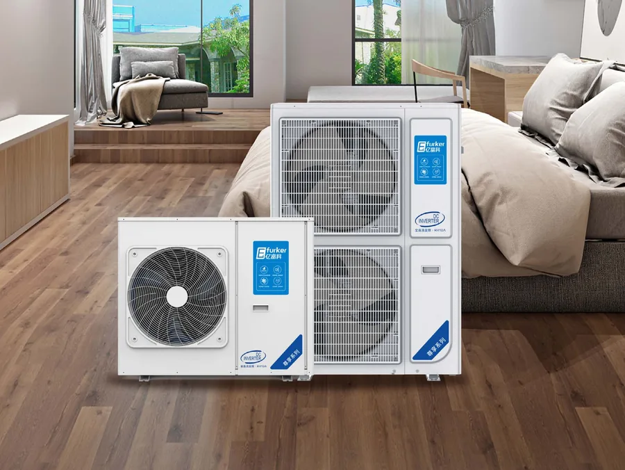
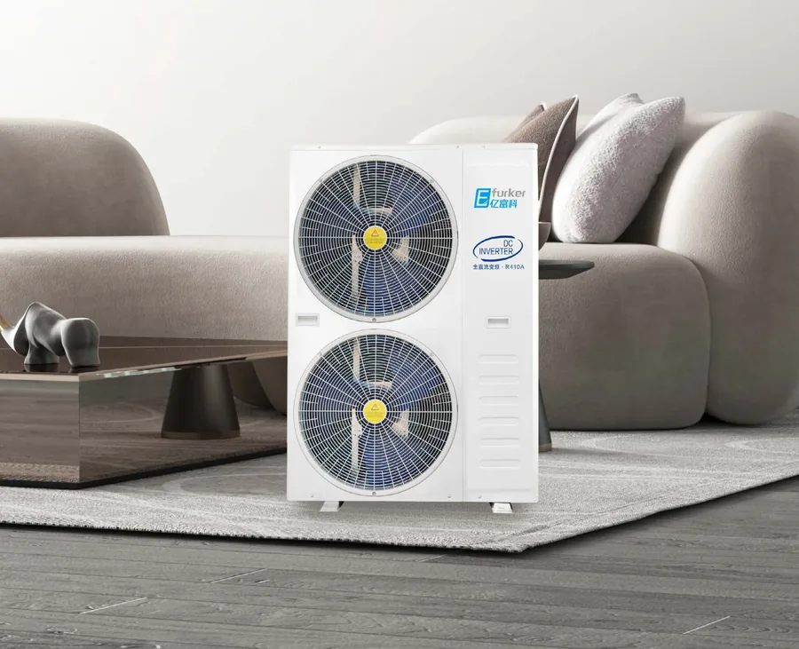
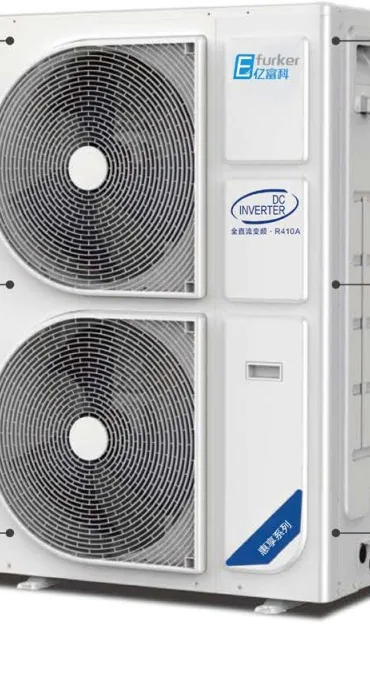
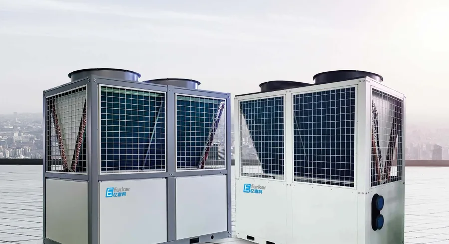
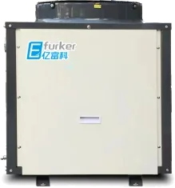
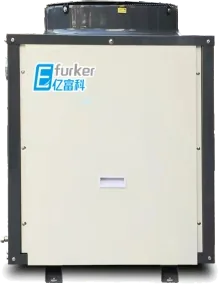
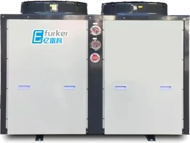
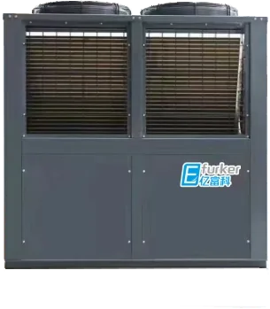

Главная / Воздушные тепловые насосы
Воздушные тепловые насосы
Тепловые насосы для отопления, охлаждения и горячей воды в домах, коммерческих и промышленных объектах. Производитель: Efurker.
Информация приведена по каталогу производителя. Цена, наличие, доставка и условия гарантии подтверждаются при заказе.

Серия Zunxiang, инверторный тепловой насос
Отопление и охлаждение в одном агрегате. Полностью DC-инверторный, точность поддержания температуры ±0,1℃, работает до −35℃. Подключается к тёплому полу и фанкойлам.
- Теплопроизводительность
- 8–43 кВт
- Производитель
- Efurker
- Хладагент
- R410A
- Рабочая температура
- до −35℃
| Параметр | YFK-C3AZ-B2/C-ZH | YFK-C5BZ-B2/E-ZH | YFK-C5BZ-B2II/E-ZH | YFK-C6BZ-B2/E-ZH | YFK-C6BZ-B2II/E-ZH | YFK-C8BZ-B2II/E-ZH | YFK-C10BZ-B2II/E-ZH | YFK-C12BZ-B2II/E-ZH | YFK-C15BZ-B2II/E-ZH |
|---|---|---|---|---|---|---|---|---|---|
| Электропитание | 220V/50Hz | 220V/50Hz | 380V/50Hz | 220V/50Hz | 380V/50Hz | 380V 3N/50Hz | 380V 3N/50Hz | 380V 3N/50Hz | 380V 3N/50Hz |
| Холодопроизводительность, кВт | – | 12.5 | 12.5 | 15 | 15 | 20 | 25 | 30.0 | 36.8 |
| Потребляемая мощность (охлаждение), кВт | – | 4.3 | 4.3 | 5.46 | 5.46 | 7.66 | 8.87 | 11.11 | 12.82 |
| Теплопроизводительность, кВт (улица 7℃, вода 45℃) | 8.02 | 14.98 | 14.98 | 16.94 | 16.94 | 22.50 | 29.20 | 36.50 | 43 |
| Потребляемая мощность (нагрев), кВт (улица 7℃) | 2.42 | 4.54 | 4.54 | 5.13 | 5.13 | 7.03 | 10.20 | 11.06 | 12.2 |
| Нагрев при −12℃, кВт (вода 41℃) | 5.08 | 10.6 | 10.6 | 12.1 | 12.1 | 15.2 | 19.2 | 24 | 32.0 |
| Потребляемая мощность при −12℃, кВт | 2.27 | 4.27 | 4.27 | 4.88 | 4.88 | 6.18 | 7.74 | 9.60 | 12.8 |
| Нагрев при −20℃, кВт (вода 41℃) | 4.1 | 9.22 | 9.22 | 10.53 | 10.53 | 13.22 | 17.05 | 20.40 | 27.2 |
| Потребляемая мощность при −20℃, кВт | 2.18 | 4.39 | 4.39 | 5.01 | 5.01 | 6.30 | 8.12 | 9.70 | 12.71 |
| Макс. потребляемая мощность, кВт | 3.96 | 6 | 6 | 6.6 | 6.6 | 7.8 | 11.00 | 14.00 | 18 |
| Макс. ток, А | 18.0 | 27.3 | 9.1 | 30 | 11.7 | 12.5 | 17.50 | 24.20 | 29 |
| Номинальный расход воды, м³/ч | 0.9 | 2.15 | 2.15 | 2.58 | 2.58 | 3.44 | 4.30 | 5.16 | 6.33 |
| Уровень шума, дБ(A) | ≤59 | ≤61 | ≤61 | ≤61 | ≤61 | ≤63 | ≤64 | ≤65 | ≤68 |
| IPLV(H) | 2.8 | 3.2 | 3.2 | 3.2 | 3.2 | 3.2 | 3.2 | 3.2 | 3.2 |
| Подключение воды | DN20 | DN32 | DN32 | DN32 | DN32 | DN40 | DN40 | DN40 | DN40 |
| Размеры, мм | 907×433×816 | 946×448×1368 | 946×448×1368 | 946×448×1368 | 946×448×1368 | 946×448×1368 | 1130×430×1555 | 1130×430×1555 | 1202×567×1663 |
| Масса, кг | 60 | 104 | 105 | 106 | 107 | 123 | 172 | 180 | 250 |

Серия Ruixiang, наружный блок
Мощный нагрев при низких температурах для холодных регионов. DC-инверторный компрессор, впрыск пара, умное оттаивание. Стабильная работа до −30℃.
- Теплопроизводительность
- 9–40 кВт
- Производитель
- Efurker
- Хладагент
- R410A
- Рабочая температура
- до −30℃
| Параметр | YFK-BZ3D/VF | YFK-BZ5D/VF | YFK-BZ5DII/VF | YFK-BZ6D/VF | YFK-BZ6SII/VF | YFK-BZ8SII/VF | YFK-BZ10SII/VF | YFK-BZ15SII/VF |
|---|---|---|---|---|---|---|---|---|
| Электропитание | 220V/50Hz | 220V/50Hz | 380V/50Hz | 220V/50Hz | 380V/50Hz | 380V/50Hz | 380V/50Hz | 380V/50Hz |
| Холодопроизводительность, кВт | 5.7 | 9 | 9 | 9.5 | 9.5 | 11.5 | 17 | 20 |
| Потребляемая мощность (охлаждение), кВт | 2.151 | 3.422 | 3.422 | 3.536 | 3.536 | 6.538 | 6.538 | 7.692 |
| Теплопроизводительность, кВт (улица 7℃, вода 45℃) | 9 | 14.6 | 14.6 | 16 | 16 | 22.3 | 32 | 40 |
| Потребляемая мощность (нагрев), кВт (улица 7℃) | 2.769 | 4.492 | 4.492 | 4.923 | 4.923 | 7.194 | 10.3 | 12.698 |
| Нагрев при −12℃, кВт (вода 41℃) | 6.4 | 10.5 | 10.5 | 11.8 | 11.8 | 15.5 | 20.6 | 25.5 |
| Потребляемая мощность при −12℃, кВт | 2.723 | 4.506 | 4.506 | 4.816 | 4.816 | 6.432 | 8.142 | 10.897 |
| Нагрев при −20℃, кВт (вода 41℃) | 5.4 | 9.5 | 9.5 | 10.5 | 10.5 | 13.5 | 16.6 | 21 |
| Потребляемая мощность при −20℃, кВт | 2.687 | 4.872 | 4.872 | 5.121 | 5.122 | 6.49 | 7.757 | 10.448 |
| Макс. потребляемая мощность, кВт | 3.4 | 6.4 | 6.4 | 6.6 | 6.6 | 8 | 12 | 13 |
| Макс. ток, А | 15.00 | 29.00 | 12.16 | 30.00 | 12.53 | 15.16 | 23.00 | 25.00 |
| Номинальный расход воды, м³/ч | 1.00 | 1.80 | 1.80 | 2.00 | 2.00 | 2.58 | 3.44 | 3.44 |
| Уровень шума, дБ(A) | 60 | 60 | 60 | 62 | 62 | 62 | 62 | 62 |
| IPLV(H) | 3.05 | 3.01 | 3.01 | 3.15 | 3.15 | 3.05 | 3.16 | 3.00 |
| Подключение воды | DN25 | DN25 | DN25 | DN25 | DN25 | DN25 | DN32 | DN32 |
| Размеры, мм | 770×353×910 | 938×392×1369 | 938×392×1369 | 938×392×1369 | 938×392×1369 | 938×392×1369 | 1118×425×1556 | 1118×425×1556 |
| Масса, кг | 57 | 90 | 90 | 98 | 95 | 122 | 170 | 185 |

Серия Huixiang, бытовой тепловой насос
Для центрального отопления и горячей воды в домах, виллах и квартирах. Нагревает воду до 55℃, можно подключить бак 100–300 л. Шум 58–59,5 дБ, удалённый контроль.
- Теплопроизводительность
- 8–23 кВт
- Производитель
- Efurker
- Хладагент
- R410A
- Макс. температура воды на выходе
- 55℃
| Параметр | YFKZ8D/VD | YFKZ9D/VD | YFKZ12D/VD | YFKZ14D/VD | YFKZ16D/VD | YFKZ20D/VD | YFKZ22D/VC |
|---|---|---|---|---|---|---|---|
| Электропитание | 220V/50Hz | 220V/50Hz | 220V/50Hz | 220V/50Hz | 220V/50Hz | 220V/50Hz | 220V/50Hz (380V) |
| Холодопроизводительность, кВт | 5.1 | 6 | 6.6 | 8.9 | 9.2 | 10 | 13 |
| Потребляемая мощность (охлаждение), кВт | 1.947 | 2.308 | 2.538 | 3.41 | 3.538 | 3.846 | 5 |
| Теплопроизводительность, кВт (улица 7℃, вода 45℃) | 8 | 9 | 12.8 | 14.6 | 16 | 20 | 23 |
| Потребляемая мощность (нагрев), кВт (улица 7℃) | 2.388 | 2.647 | 3.765 | 4.424 | 4.848 | 6.452 | 7.194 |
| Нагрев при −12℃, кВт (вода 41℃) | 5.2 | 6 | 8.7 | 10.5 | 11.6 | 13.5 | 15 |
| Потребляемая мощность при −12℃, кВт | 2.251 | 2.586 | 3.734 | 4.375 | 4.797 | 5.625 | 6.356 |
| Нагрев при −20℃, кВт (вода 41℃) | 4.55 | 4.86 | 7.134 | 9.6 | 9.8 | 11.6 | 12.5 |
| Потребляемая мощность при −20℃, кВт | 2.31 | 2.531 | 3.658 | 4.898 | 5 | 5.8 | 6.219 |
| Макс. потребляемая мощность, кВт | 3.08 | 3.4 | 5.2 | 6.4 | 6.6 | 7.05 | 8 |
| Макс. ток, А | 14 | 15 | 23.6 | 29 | 30 | 34 | 36.3 |
| Номинальный расход воды, м³/ч | 1.38 | 1.55 | 2.20 | 2.51 | 2.75 | 3.44 | 3.96 |
| Уровень шума, дБ(A) | 58 | 58 | 58.5 | 59 | 59 | 59 | 59.5 |
| IPLV(H) | 2.88 | 2.85 | 2.82 | 2.88 | 2.83 | 2.94 | 2.95 |
| Подключение воды | DN25 | ||||||
| Размеры, мм | 845×320×695 | 910×353×770 | 938×392×1369 | 938×392×1369 | 938×392×1369 | 938×392×1369 | 938×392×1369 |
| Масса, кг | 50 | 76 | 115 | 130 | 130 | 130 | 145 |

Коммерческий воздушный тепловой насос SHBR
Для отопления и охлаждения гостиниц, школ, жилых кварталов и предприятий. V-образный теплообменник, электронный расширительный вентиль, встроенное реле потока. Работает при температуре окружающей среды от −30℃ до 45℃.
- Номинальный нагрев
- 51–111 кВт
- Производитель
- Efurker
- Хладагент
- R410A
- Электропитание
- 380V/3N/50Hz
| Параметр | SHBR-25IIA | SHBR-50IIA | SHBR-60IIA |
|---|---|---|---|
| Номинальная теплопроизводительность, кВт | 51 | 102 | 111 |
| Номинальная потребляемая мощность, кВт | 20.3 | 40.48 | 43.8 |
| COPh | 2.51 | 2.52 | 2.53 |
| IPLV(H) | 2.6 | ||
| Расчётная теплопроизводительность, кВт (улица 7℃, вода 45℃) | 69 | 155 | 168 |
| Расчётная потребляемая мощность, кВт | 20.9 | 45.6 | 49.4 |
| Расчётный COP | 3.3 | 3.4 | 3.4 |
| Нагрев при низкой температуре, кВт | 43.44 | 86.88 | 94.55 |
| COP при низкой температуре | 2.20 | 2.21 | 2.21 |
| Номинальная холодопроизводительность, кВт | 65 | 130 | 130 |
| COP охлаждения | 2.8 | ||
| Рабочий ток, А | 46 | 79 | 90 |
| Макс. ток, А | 62 | 125 | 137 |
| Заправка хладагента | R410A 7.8 кг ×2 | R410A 14 кг ×2 | R410A 14 кг ×2 |
| Подключение воды | DN50 (flange) | DN65 (flange) | DN65 (flange) |
| Расход циркуляционной воды, м³/ч | 12.9 | 26.7 | 28.9 |
| Гидравлическое сопротивление, кПа | 45 | 50 | 50 |
| Уровень шума, дБ(A) | ≤62 | ≤69 | ≤70 |
| Масса, кг | 700 | 1200 | 1300 |
| Размеры, мм | 2090×1100×2170 | 2270×1300×2250 | 2320×1200×2450 |
Условия испытаний номинального нагрева: улица −12/−14℃, вода на выходе 41℃. Рабочая среда от −30 до 43℃, температура воды от 20 до 50℃.


Тепловой насос для горячей воды YFK-KLR, 3–8P
Для круглосуточного горячего водоснабжения школ, гостиниц, фабрик и малого бизнеса. Стабильно работает при −30℃. 10 уровней защиты.
- Теплопроизводительность
- 8.3–23.8 кВт
- Производитель
- Efurker
- Хладагент
- R410A
- Электропитание
- 380V/50Hz
| Параметр | YFK-KLR030-1 (3P) | YFK-KLR050-1 (5P) | YFK-KLR060-1 (6P) | YFK-KLR070-1 (7P) | YFK-KLR080-1 (8P) |
|---|---|---|---|---|---|
| Электропитание | 380V/50Hz | ||||
| Нагрев, кВт (улица 7℃, вода 40/45℃) | 8.3 | 15.8 | 18.4 | 22.1 | 23.8 |
| Потребляемая мощность (нагрев), кВт | 2.4 | 4.2 | 5.2 | 5.9 | 6.6 |
| COP | 3.46 | 3.76 | 3.54 | 3.74 | 3.6 |
| Нагрев при низкой температуре, кВт (улица −12℃, вода 36/41℃) | 5.56 | 9.0 | 10.96 | 15.6 | 16.03 |
| Потребляемая мощность при низкой температуре, кВт | 2.42 | 4.2 | 5.2 | 5.02 | 7.62 |
| COP при низкой температуре | 2.3 | 2.19 | 2.11 | 2.11 | 2.21 |
| Охлаждение, кВт (улица 35℃, вода 12/7℃) | 7 | 13.0 | 14.09 | 18.2 | 21.91 |
| Потребляемая мощность (охлаждение), кВт | 2.4 | 4.5 | 5.3 | 6.5 | 7.7 |
| COP охлаждения | 2.9 | 2.88 | 2.86 | 2.8 | 2.86 |
| Номинальная мощность, кВт | 2.4 | 4.5 | 5.5 | 6.3 | 7.6 |
| Макс. потребляемая мощность, кВт | 5 | 6.5 | 8.5 | 8.5 | 10.1 |
| Макс. ток, А | 9 | 28 | 28 | 28 | 34 |
| Хладагент R410A, г | 2400 | 4500 | 4600 | 5000 | 4800 |
| Подключение воды | DN25 | ||||
| Уровень шума, дБ(A) | 56 | 58 | 58 | 58 | 58 |
| Масса, кг | 105 | 145 | 162 | 182 | 188 |
| Размеры, мм | 710×710×860 | 750×750×1080 | 750×750×1080 | 810×810×1080 | 810×810×1280 |


Центральный тепловой насос для горячей воды и отопления YFK-KLR, 10–60P
Сверхнизкотемпературные агрегаты центрального горячего водоснабжения и отопления, от 10 до 60 P, вода до 55℃. Несколько блоков объединяются в одну систему.
- Теплопроизводительность
- 33–171 кВт
- Производитель
- Efurker
- Хладагент
- R410A
- Электропитание
- 380V/50Hz
| Параметр | KLR100 (10P) | KLR120 (12P) | KLR150 (15P) | KLR200 (20P) | KLR250 (25P) | KLR300 (30P) | KLR400 (40P) | KLR500 (50P) | KLR600 (60P) |
|---|---|---|---|---|---|---|---|---|---|
| Электропитание | 380V/50Hz | ||||||||
| Нагрев, кВт (улица 7℃, вода 40/45℃) | 33.12 | 36.8 | 42.6 | 62.4 | 73.6 | 88.2 | 114 | 154.8 | 171.2 |
| Потребляемая мощность (нагрев), кВт | 9.2 | 10.4 | 12.2 | 17.8 | 21 | 25.3 | 32.5 | 43 | 48.6 |
| COP | 3.60 | 3.49 | 3.49 | 3.51 | 3.5 | 3.5 | 3.5 | 3.6 | 3.42 |
| Подключение воды | DN40 | DN40 | DN40 | DN50 | DN63 | DN63 | DN63 | DN80 | DN80 |
| Уровень шума, дБ(A) | 63 | 63 | 65 | 65 | 65 | 58 | 72 | 72 | 74 |
| Масса, кг | 312 | 350 | 420 | 582 | 650 | 825 | 1155 | 1385 | 1472 |
| Размеры, мм | 1450×740×1080 | 1450×740×1080 | 1450×800×1550 | 2000×1050×2050 | 2000×1050×2050 | 2000×1050×2050 | 2200×1450×2350 | 2200×1450×2350 | 2200×1450×2350 |
Значения приведены по каталогу. Данные могут изменяться, поэтому перед заказом их уточняют.